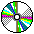
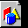

Here are all of the images used in the EROS web pages, and the meanings that are conventionally associated with them. If an image file does not appear on this list, it is probably a person's picture.
Icons used within documents
|  | Used to indicate that a portion of a document is frozen, since documents on CD-ROM cannot be altered. |
| Used to indicate that a portion of a document is stable. | |

|
Used to indicate that this portion of a document is still under construction. |
| Indicates that a portion of the document is brand new. | |

|
Used to highlight a cautionary note in a document |
| Used to indicate within a document places where "goodies" can be obtained. | |
|  | Used to indicate places in a document where a large image has been taken out of line for the sake of modem users. |
Copyright 1998 by Jonathan Shapiro. All rights reserved. For terms of redistribution, see the GNU General Public License